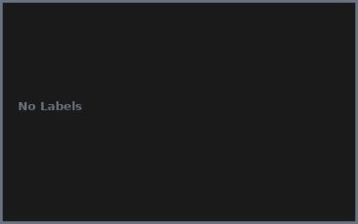
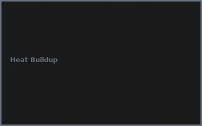

Kapitel 1: Kabelmanagement Grundlagen
- Ordnung = längere Kabellebensdauer!
- Bessere Wärmeableitung durch Luftzirkulation
- Einfachere Fehlersuche bei Problemen
- Professionelle Optik am Arbeitsplatz
Kapitel 2: DIY Organizer bauen
# DIY Kabelmanagement System - Materialliste
# Klett-Kabelbinder 2€ (50 Stück)
# Selbstklebende Kabelclips 2€ (20 Stück)
# Spiralschlauch 2€ (10m)
# Beschriftungsband 2€
# Tischklemmen 1€
# Gesamt: 9€ für komplettes Setup
Kapitel 3: Kabelführung
- Führung hinter dem Schreibtisch
- Kabelkanäle unter dem Tisch
- Wandmontierte Kabelkanäle
- Spiralschlauch-Organisation
Kapitel 4: Kabel-Identifikation
- Farbcodierte Beschriftung
- Geräte-Zuordnung dokumentieren
- Steckertypen erfassen
- Schnellreferenz-Liste erstellen
Kapitel 5: Stromverteilung
- Überspannungsschutz richtig platzieren
- Steckdosenleisten organisieren
- Zugänglichkeit der Steckdosen
- Lastverteilung beachten
Kapitel 6: Wartung & Erweiterung
- Regelmäßige Kabelkontrollen
- Beschädigungen prüfen
- Neue Geräte einfach hinzufügen
- Jährliche Grundreinigung
💡 PRO-TIPPS
🎯 Tipp: 3-Finger-Regel!
Problem: Kabel brechen an Knickstellen | Lösung: Mindestens 3cm Biegeradius einhalten!
💰 BUDGET-HACKS (98% SPAREN!)
💰 Hack: DIY vs. Profi-System
Original: Profi-Kabelmanagement: 500€+ | Hack: DIY-Organizer: 9€ | Einsparnis: 98%
⚠️ FEHLER
❌ Fehler: Zu fest gebunden
Was passiert: Kabelschäden und Isolationsprobleme | ✅ Lösung: Klett-Bänder locker anbringen
🌐 COMMUNITY
r/CableManagement, Desk Setup Community, Heimwerker-Foren, Organisation-Gruppen
📸 Fehler-Galerie

